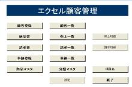

第35回.メニューを作成
エクセルで顧客管理を作ろう、
エクセルも大分出来てきましたので、シート見出しを頼りに移動しているのは不便です、
今回はメニューを作成します。
以下が作成したメニューです。

いろいろ、機能が増えていますが、プログラムは「納品書」とほぼ同様です。
次回、エクセルをアップしますので、確認して下さい。
メニューの作り方
ボタンを配置すれば終了です（笑）
いや、本当に、ボタンを配置して、Clickイベントで、当該シートへ移動すれば良いのです。
でも、それだけでは面白くないので、少し細工を施します。
ワークブックモジュールの「Workbook_Open」を以下にします。
Private Sub Workbook_Open()
Application.OnKey "{F1}",
"ファンクションF1"
Call シート移動("メニュー")
シート取得("メニュー").ScrollArea =
"$A$1:$F$14"
ActiveWindow.DisplayHeadings = False
ActiveSheet.Protect
DrawingObjects:=False, Contents:=True,
Scenarios:=False
ActiveWorkbook.Saved = True
End
Sub
Application.OnKey "{F1}", "ファンクションF1"
これは元々入れてあった、F1押下時に、プロシージャーを起動するものです。
Call シート移動("メニュー")
指定シートに移動し、他のシートは非表示にするモジュールです。
後述します。
シート取得("メニュー").ScrollArea = "$A$1:$F$14"
指定範囲のみスクロール可能ににします。
スクロール不可の範囲は、セルの選択も出来なくなります。
ActiveWindow.DisplayHeadings = False
ActiveSheet.Protect DrawingObjects:=False, Contents:=True,
Scenarios:=False
シート保護です。
ActiveWorkbook.Saved = True
ブックを保存済状態にします。
この後、何らかの変更がブックに加えられると、Falseになります。
つまり、ブックを開いた直後は、変更無しの状態にしています。
これが無いと、Workbook_Openが動作していますので、何も変更していなくても、
未保存状態になってしまい、閉じる場合に、保存確認が表示されます。
次に、上に出てきた、「シート移動」です。
Sub シート移動(ByVal strSht As String)
Dim sht As
Worksheet
Application.EnableEvents = True
シート取得(strSht).Visible
= True
シート取得(strSht).Select
Application.EnableEvents = False
For
Each sht In ActiveWorkbook.Worksheets
If Not sht Is ActiveSheet
Then
sht.Visible = False
End If
Next
Select Case
ActiveSheet.Name
Case シート取得("顧客一覧").Name,
シート取得("商品マスタ").Name
Dim ary As Variant
ary =
シート取得("設定").Range("シート名")
ActiveSheet.cmbシート名.Clear
ActiveSheet.cmbシート名.List()
= ary
Application.MoveAfterReturnDirection = xlDown
Case
シート取得("顧客登録").Name,
シート取得("事跡登録").Name
Application.MoveAfterReturnDirection =
xlToRight
Case Else
Application.MoveAfterReturnDirection =
xlDown
End Select
Application.EnableEvents = True
End
Sub
各シートに、タイトルを入れると見やすいのですが、わざわざタイトル表示も面倒なので、
代わりに、シート見出しを使います。
アクティブシート以外は非表示にし、アクティブシートのシート名のみ表示された状態にします。
Application.EnableEvents = True
シート取得(strSht).Visible =
True
シート取得(strSht).Select
Application.EnableEvents =
False
Visible = Trueで表示し、Selectしています。
For Each sht In ActiveWorkbook.Worksheets
If Not sht Is ActiveSheet Then
sht.Visible =
False
End If
Next
Select Case ActiveSheet.Name
シート毎に、必要な初期処理を記述する為です。
Application.MoveAfterReturnDirection = xlToRight
「顧客登録」では、EnabledSelectionをxlUnlockedCellsに設定し、シート保護しています。
この場合、セルロックしていないセルのみ移動できるようになっていますが、
セル結合しており、結合数もバラバラなので、「Enter」で、下に移動しない場合が発生します。
この為、右移動で下に移動させる為です。（右側に有効セルがないので、下に移動します）
各シートには、メニューへ移動する為のボタンを配置します。
これで、ちょっとしたアプリっぽくなりました（笑）
さらに、ちょっとしたお遊びです。
「Workbook_Open」に「ActiveWorkbook.Saved = True」を入れた理由です。
ワークブックモジュールに以下を追加します。
Private Sub Workbook_BeforeClose(Cancel As Boolean)
Dim rtn As
Integer
If ActiveWorkbook.Saved = False Then
rtn =
MsgBox("あれ、保存してないですよね？" & vbLf & vbLf &
_
"この後「いいえ」とか押したら大変ですよ。" & vbLf & vbLf &
_
"「終了」ボタンを使いましょうね。" & vbLf & vbLf &
_
"保存しちゃっても良いですか？", vbYesNo, "確認")
If rtn = vbYes
Then
ActiveWorkbook.Save
End If
End If
End
Sub
メニューの終了ボタンを使わなかった場合のメッセージです。
ただし、ブックを開いた直後や、保存直後はメッセージが表示されません。
これを判定しているのが、
If ActiveWorkbook.Saved = False Then
ActiveWorkbook.Savedは、ブックに変更があった場合に、Falseになります。
保存した場合は、Trueになります。
この為に、「Workbook_Open」でTrueにしたのです。
どうでしょう。
大分それらしくはなってきました。
当初の予定機能で、未実装がまだありますが、本シリーズは、次回で一旦終了する予定です。
次回は全体の解説と、現時点でのエクセルも次回アップします。
同じテーマ「エクセル顧客管理」の記事
第28回.納品書データをデータベース化(1)
第29回.納品書データをデータベース化(2)
第30回.配列の使い方について
第31回.売上一覧（伝票合計の一覧）を作成(1)
第32回.売上一覧（伝票合計の一覧）を作成(2)
第33回.売上一覧より納品書を作成
第34回.伝票番号の自動採番機能を追加
第35回.メニューを作成
第36回.最終回
その後№1、CSV出力を追加
その後№2、ベクター掲載
新着記事NEW ・・・新着記事一覧を見る
VBA100本ノック 100本目：WEBから100本ノックのリストを取得｜VBA練習問題（3月3日）
VBA100本ノック 99本目：自動席替え（行列と前後左右が全て違うように）｜VBA練習問題（3月2日）
VBA100本ノック 98本目：席替えルールが守られているか確認｜VBA練習問題（3月1日）
VBA100本ノック 97本目：Accessデータを取得（グループ集計）｜VBA練習問題（2月27日）
VBA100本ノック 96本目：Accessデータを取得（マスタ結合&抽出）｜VBA練習問題（2月26日）
VBA100本ノック 95本目：図形のテキストを検索するフォーム作成｜VBA練習問題（2月24日）
VBA100本ノック 94本目：表範囲からHTMLのtableタグを作成｜VBA練習問題（2月23日）
VBA100本ノック 93本目：複数ブックを連結して再分割｜VBA練習問題（2月22日）
VBA100本ノック 92本目：セルの色を16進で返す関数｜VBA練習問題（2月20日）
VBA100本ノック 91本目：時間計算（残業時間の月間合計）｜VBA練習問題（2月19日）
アクセスランキング ・・・ ランキング一覧を見る
1.最終行の取得（End,Rows.Count）｜VBA入門
2.RangeとCellsの使い方｜VBA入門
3.変数宣言のDimとデータ型｜VBA入門
4.マクロって何？VBAって何？｜VBA入門
5.Range以外の指定方法（Cells,Rows,Columns）｜VBA入門
6.セルのコピー&値の貼り付け（PasteSpecial）｜VBA入門
7.繰り返し処理（For Next)｜VBA入門
8.セルに文字を入れるとは（Range,Value）｜VBA入門
9.マクロはどこに書くの（VBEの起動）｜VBA入門
10.とにかく書いてみよう（Sub,End Sub）｜VBA入門
このサイトがお役に立ちましたら「シェア」「Bookmark」をお願いいたします。
記述には細心の注意をしたつもりですが、
間違いやご指摘がありましたら、「お問い合わせ」からお知らせいただけると幸いです。
掲載のVBAコードは動作を保証するものではなく、あくまでVBA学習のサンプルとして掲載しています。
掲載のVBAコードは自己責任でご使用ください。万一データ破損等の損害が発生しても責任は負いません。